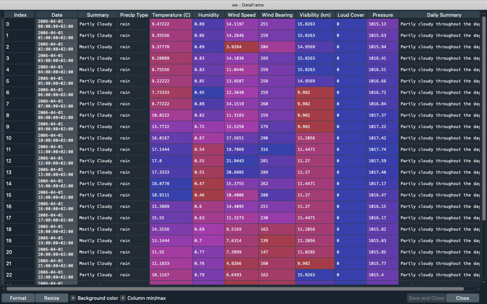

Variable Explorer¶
The Variable Explorer allows you to interactively browse and manage the objects generated running your code.

It shows the namespace contents (including all global objects, variables, class instances and more) of the currently selected IPython Console session, and allows you to add, remove, and edit their values through a variety of GUI-based editors.

The Variable Explorer gives you information on the name, size, type and value of each object. To modify a scalar variable, like an number, string or boolean, simply double click it in the pane and type its new value.

Object Viewers¶
Spyder’s Variable Explorer offers built in support for editing lists, strings, dictionaries, NumPy arrays, Pandas DataFrames, Series and more; as well as being able to plot and visualize them with one click.
Strings¶
When a string variable is longer than forty characters, you can double click it to see its value in a text editor to more easily modify it.

Dictionaries¶
Double-clicking on dictionaries will show a viewer displaying each of its keys with its associated value. You can double click any of the values to modify them, which will open a new viewer if the value is itself an object.

Lists¶
For lists, the main Variable Explorer displays a preview of the first ten values. To see them all, double click the list to open a viewer that will display the index, type, size and value of each element of the list. Just like dictionaries, you can double-click values to edit them.

Numpy Arrays¶
Like lists, for Numpy arrays the Variable Explorer shows a preview of their values. Double-clicking them will open a viewer displaying the array values in a “heat map”, with each value in a grid cell colored based on its numeric quantity. You can deactivate the background color by unchecking the appropriate option in the viewer, which will happen automatically if the array is too large to improve performance.

If supported by the datatype, you can also change the format of the array’s values, choosing the number of decimals that you want the array to display. For this, click the Format button and and set the desired formatting in the dialog that appears, using standard Printf-style syntax.
Additionally, you can adjust the size of the rows and columns of the array by expanding or contracting their headers. Clicking the Resize button will set it automatically.

DataFrames¶
DataFrames, like Numpy arrays, display in a viewer where you can show or hide “heatmap” colors, change the format and resize the rows and columns either manually or automatically.
Additionally, the Variable Explorer in Spyder 4 has MultiIndex support in its DataFrame inspector, including for multi-level and multi-dimensional indices.

Options Menu¶
The options menu in the top right of the Variable Explorer pane allows you filter the objects shown by a number of different criteria.

It also allows you to display the min and max of Numpy arrays instead of a preview of their values.

Toolbar Buttons¶
The Variable Explorer’s toolbar includes several useful features that affect the entire namespace.
For example, you can save the current session’s data as a .spydata file, which can be loaded later to recover all the variables stored.

There is also a button to remove all displayed variables, and a search box to find objects by name or type.

Finally, there is a button to refresh the Variable Explorer’s contents, which will update it to show the current state of the code running in the IPython console.
Advanced Functionality¶
The context menu, available by right-clicking any variable, provides numerous additional options to interact with objects of various types. These include renaming, removing or editing existing variables, as well as the duplicate option to create a new copy of one of them under a new name you enter in the resulting dialog box.

Furthermore, you can copy and paste the value of a variable, saving it in the Variable Explorer with any name that you choose. This allows you to change the type of the variable that you are pasting which can be very useful, allowing you to, for example, easily copy the elements of a list into an array.

Additionally, you can create an object from scratch directly in the Variable Explorer with the Insert option, which allows you to type the key (which should be in quotation marks) and the value for the item that you want to insert. In addition to adding a new top-level variable, this feature also allows you to create a new key in a dictionary, a new element in a list, and much more.

For lists and Numpy arrays, more advanced options are available, including generating plots and histograms of their values appropriate to their type and dimensions.

You can even save an array to a .npy file by simply clicking the appropriate option, which can later be loaded by Spyder or in your code via numpy.load().

For two-dimensional arrays, you can also display them as images, treating their values as RGB colors. For this, Spyder uses Matplotlib’s colormaps, which can be easily changed to match your preferences.

Finally, we added a context-menu action to open any object using the new Object Explorer even if they already have a builtin viewer (DataFrames, arrays, etc), allowing for deeper inspection of the inner workings of these datatypes.